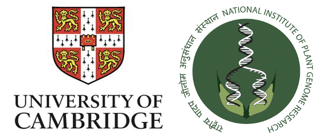
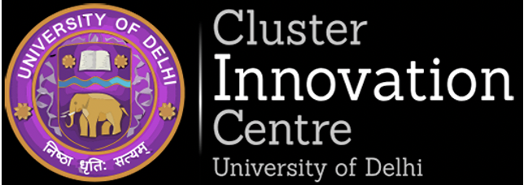

Work Experience
📍Software Developer Intern

Organisation / Company 🖥 🌏 : CEVOopen, University of Cambridge x NIPGR
Selected after a virtual interview and succesful completion of a technical coding task, I at CEVOpen work on creating automated pipeline to convert IPCC’s PDF reports into XML & HTML webpages. I have been utilising web scraping tools like ParseHub to convert the reports into semantic form by creating AMI- dictionaries. Conducted analysis of report data, utilizing Google Cloud Big Query,Tableu,R and SQL to synthesize and share. Using EasyOCR & Machine Learning tools like tesseract to extract text out of images and data visualisations.
📍Computer Science Research Assistant
Organisation / Company 🖥 🌏 : University of Toronto
I collaborated to construct a pipeline using Dexcom and Fitbit API, to collect store and participants’ data in CSV format. I applied python tools to find correlation between menstrual cycles & health parameters. Organised a Discord Bot using API queries to help organise periodic reminders for the cohort of participants to reduce manual labour costs.
Helped with study setup and closure.
📍Machine Learning Engineer Intern
Organisation / Company 🖥 🌏 : CaptionPlus
I Conducted Data Analysis using NLP features via NLTK and Scikit-Learn. Optimised personalisation algorithms for CaptionPlus, an application with over 30,00,000 downloads.
Helped mantain and organise the User Data in backend using SQL. Collaborated with multi-disciplinary product development teams to improve in-app experience.
📍Junior Software Engineer Intern
Organisation / Company 🖥 🌏 : Akiko Sherman Infotech
Helped implement the Ecommerce side of Farm2Plate ERP - an essential ERP to automate the supply chain processes. Helped design of E-Commerce web applications using JavaScript & Python frameworks to increase audience engagement. Coded with HTML/CSS, React to improve the user experience on the E-commerce page and dashboard.
📍Data Science Researcher

Organisation / Company 🖥 🌏 : Cluster Innovation Center
Selected after a virtual interview and succesful completion of a technical coding task, I Research and analysis of Coronavirus Data using SPSS and Tableau under guidance of Prof. Shobha Bagai. Used Python for applyied mathematical and regression models to find correlation between cases and state affairs. Used Pandas, SciPy and R language for Data Cleaning & Altair, GGplot and Microsoft Power BI for Data Visualisations.